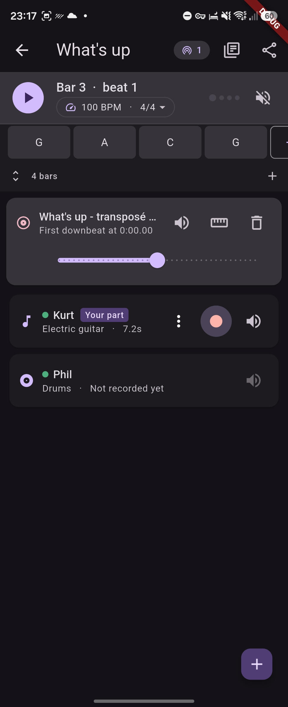
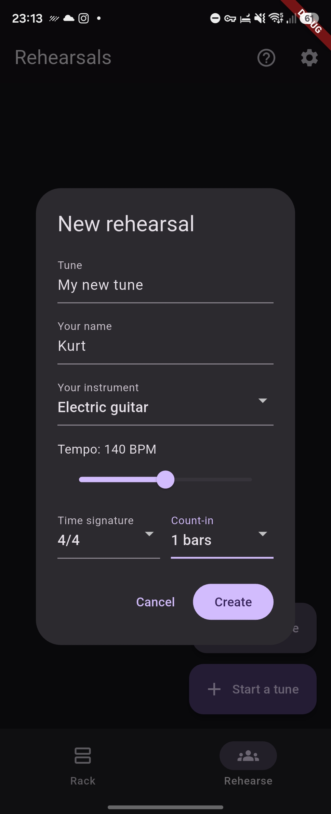
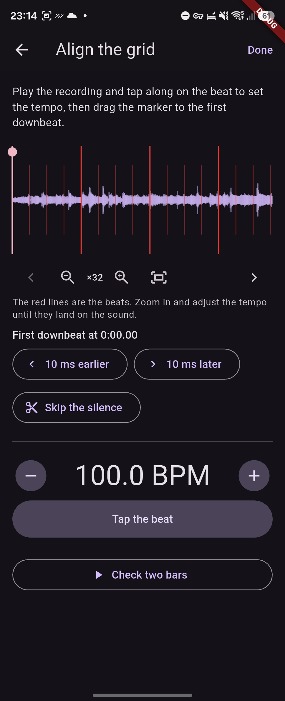
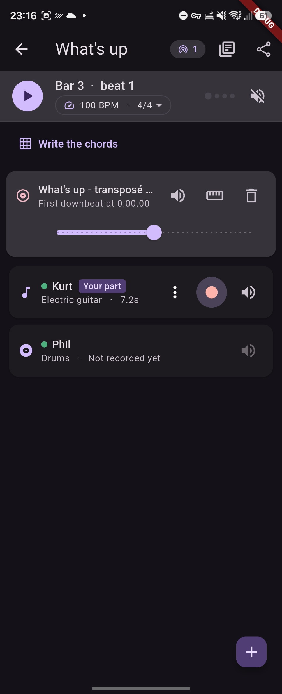
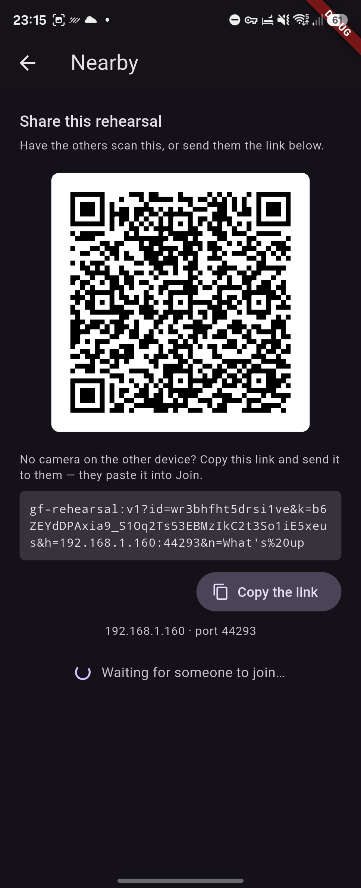

Rehearsals
A band learns a tune together, on the phones it already has. Everyone records their own part over a shared click, and the parts collect into one arrangement that every device holds a full copy of.

How a rehearsal works
Start a tune, give it a tempo and a time signature, and add a lane for your instrument. Press record: a count-in runs first, then you play along to whatever is already there. Your part joins the mix, and the next person records theirs against it.
You record your own parts and nobody else's. Yours can be re-recorded or deleted as often as you like — a take is yours until you are happy with it.

Overdubs that land on the beat
Every device takes a moment to play sound and another to capture it. Together that delay would put every take behind the beat by roughly thirty milliseconds on a phone, and far more over Bluetooth — enough to hear, and enough to ruin a stack of parts.
GrooveForge measures the round trip on the device itself: it plays a short frequency sweep and finds it again in the microphone signal by cross-correlation. Each take is then shifted back by exactly that much, so what you played on the beat lands on the beat.
The measurement is kept per output, because the delay belongs to the gear rather than to the tune: the phone's own speaker, a wired headset and every Bluetooth headset each keep their own figure, and the app says so when you are wearing something it has never measured.
Play along to a recording
Import a track to learn — MP3, FLAC and WAV everywhere, plus M4A, AAC and the soundtrack of a video on Android. Tap the beat to set the tempo, then drag a marker onto the first downbeat so the bar grid lines up with the music. Zoom into the waveform, scroll along it, and check the tempo against red lines drawn on every beat: a tempo a tenth out is inaudible over two bars and obvious after thirty.
The click switches itself off once a recording is there, because that is the tempo now.

Practice speed
Slow the whole tune to 50% to work a passage. The recordings are time-stretched rather than played slower, so nothing drops in pitch — a guitar part at 70% would otherwise land three semitones flat and be useless to play against.
Practice speed is local to your device. One player working a hard bar at half speed does not drag the rest of the band down with them.
Chords and scores
Write the tune's form on a chord grid, bar by bar, one to four chords a bar, with the bar
being played lit up. Collapsed to a single line it scrolls itself while you play. Chord symbols are read
properly rather than stored as text — Ab, C#m7, Gm7b5,
C6/9, Am(M7)/B all resolve to a root, a triad and a full set of intervals.
Each tune also carries a shared score folder: add a PDF, a chart or a photo of a page, and everyone in the band gets a copy. Scans open full screen and zoomable.

Sharing, with no server and no account
Parts travel directly from one device to another over the local network, encrypted. Show a QR code once, or send a link; from then on the devices find each other by themselves and simply opening the same tune is enough.
There is no host and no authority. The merge is symmetric and conflict-free, so any two devices that meet converge on the same arrangement in any order, and a device that was away catches up whenever it next appears. Nothing is uploaded anywhere — there is no service that could receive it, and none is needed.
A dot on each lane says whether the player who owns it is connected, and a take that has not yet reached every device in the room is flagged, so nobody packs up mid-transfer.

When the room has no Wi-Fi
Everyone has to be on the same network, and phones on mobile data cannot see each other. Rehearsal rooms rarely have usable Wi-Fi, so one person turns on their phone's personal hotspot and the others join it — the rehearsal itself uses no mobile data, because nothing leaves the room. It does not have to be the same person every time.